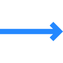

EMPRESAS DE TODO EL MUNDO YA CONFÍAN EN SLACK
Conecta con las personas adecuadas, encuentra lo que necesitas y automatiza todo lo demás. Así es como se trabaja en Slack, tu plataforma de productividad.
EMPRESAS DE TODO EL MUNDO YA CONFÍAN EN SLACK

Automatiza las tareas rutinarias con las posibilidades de la IA generativa y simplifica tu flujo de trabajo con tus aplicaciones favoritas listas para usar en Slack.
Más información sobre la plataforma de Slack
Automatiza las tareas rutinarias con las posibilidades de la IA generativa y simplifica tu flujo de trabajo con tus aplicaciones favoritas listas para usar en Slack.
Más información sobre la plataforma de Slack
Automatiza las tareas rutinarias con las posibilidades de la IA generativa y simplifica tu flujo de trabajo con tus aplicaciones favoritas listas para usar en Slack.
Más información sobre la plataforma de SlackEquipos grandes y pequeños confían en Slack
85%
de usuarios afirma que Slack ha mejorado la comunicación
86%
creen que su capacidad para trabajar a distancia ha mejorado
88%
se sienten más conectados con sus equipos
“Muchos empleados del sector tecnológico estaban realizando una transición natural hacia Slack. Por lo tanto, seguimos los pasos de nuestros usuarios hacia lo que a día de hoy es una de nuestras herramientas más importantes”.
Matt Beal
Director de Estrategia y Arquitectura Tecnológica, Vodafone
Ver casos de más clientes * Promedio ponderado. Basado en una encuesta de 2707 respuestas de usuarios semanales de Slack en Estados Unidos, Reino Unido, Australia y Canadá, con un margen de error de ± 2 % al 95 % CI (diciembre de 2021).
 Soluciones
Soluciones
 Cómo
Cómo